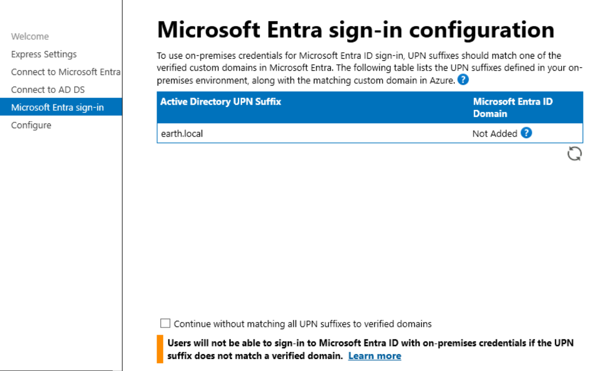
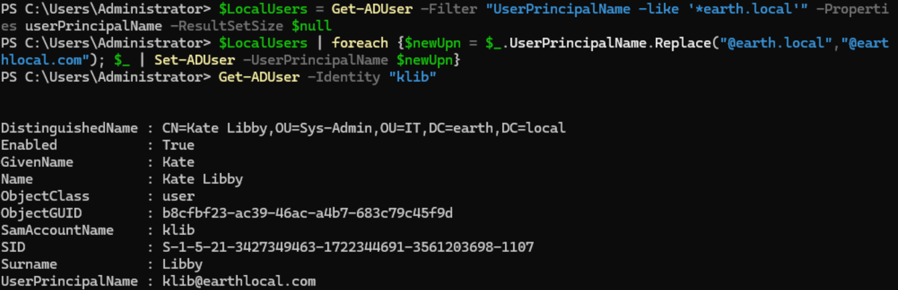
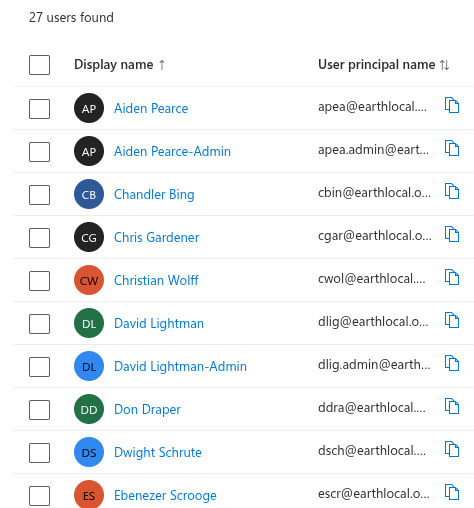
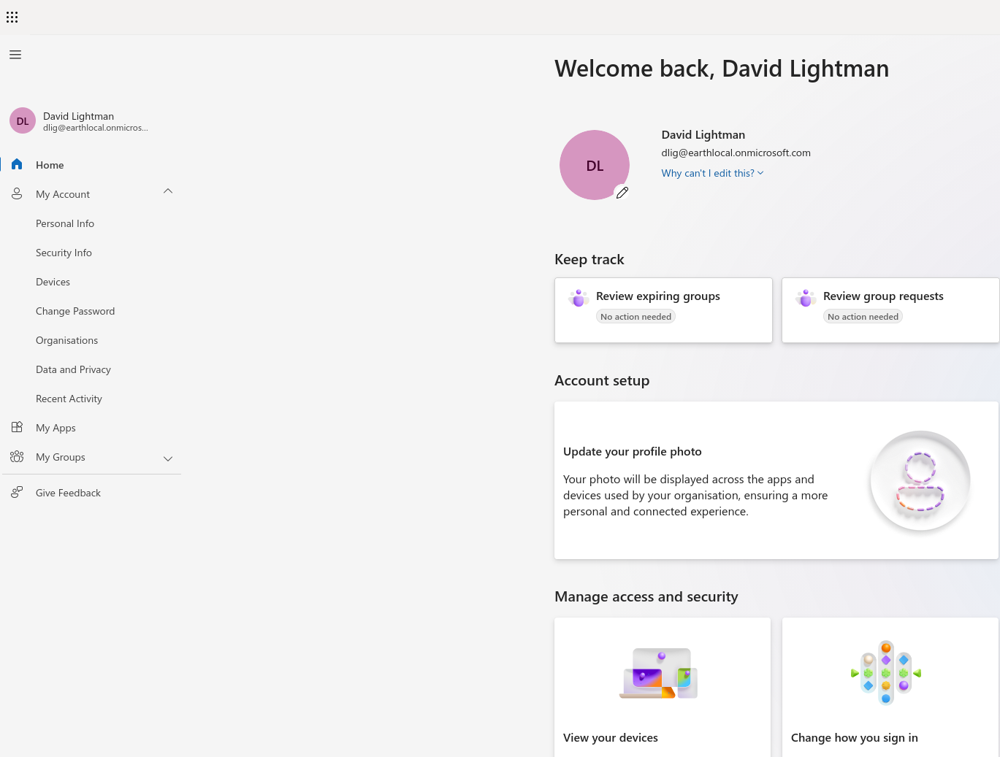
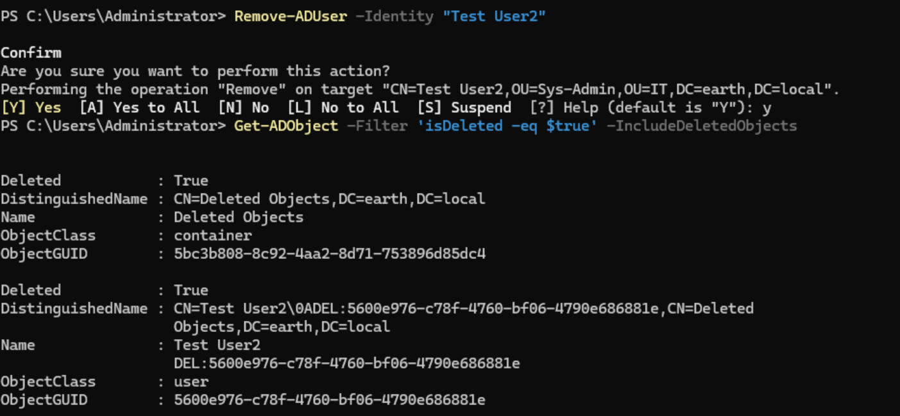
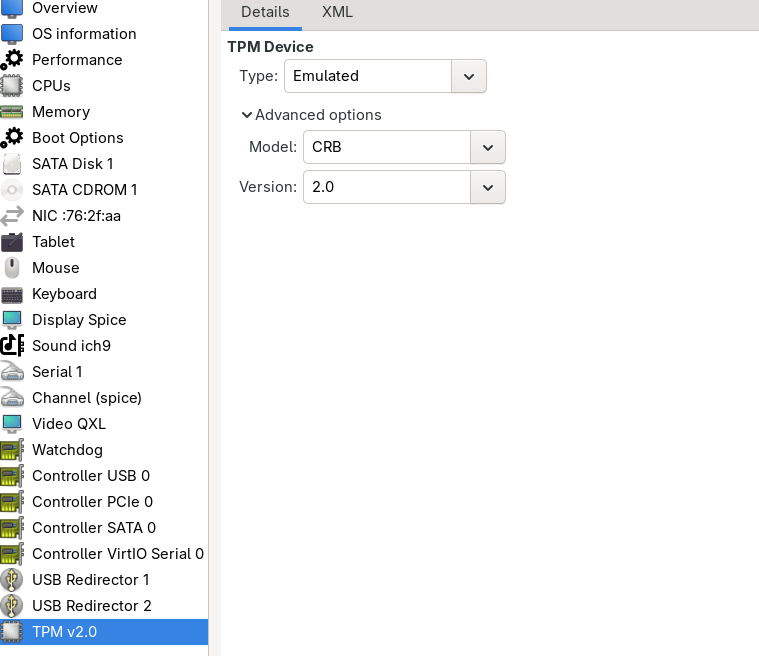
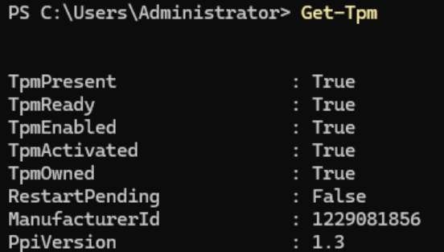

Entra ID Setup
Directory Synchronisation
Currently my domain is fully local, Active Directory only. I wanted to introduce some cloud and MDM concepts, so I signed up to Microsoft Entra and Intune.
What I needed to do first was something called Directory Synchronisation. This allows Active Directory and Entra ID to be synced. This can be achieved using Microsoft Entra Connect.
I downloaded the Microsoft Entra Connect agent and went through the installation process, choosing the Express Installation option. Once I reached the Microsoft Entra sign-in tab, I saw a message regarding Active Directory UPN Suffixes:
UPN suffix warning
Users would not be able to sign in to Microsoft Entra ID with on-prem credentials if the suffix does not match a verified domain.

Entra would add a suffix to the login, so to make the login smoother I decided to update the UPN from earth.local to earthlocal.com, which would then be represented by Microsoft Entra as earthlocal.onmicrosoft.com. I used the steps from this Microsoft Learn article.
Step 1: Add the new UPN suffix
- On the AD DS domain controller, in Server Manager, chose Tools > Active Directory Domains and Trusts.
- In the Active Directory Domains and Trusts window, right-clicked Active Directory Domains and Trusts, then chose Properties.
- On the UPN Suffixes tab, in the Alternative UPN Suffixes box, typed the new UPN suffix, then chose Add > Apply.
Step 2: Change the UPN suffix for existing users
I did this using PowerShell:
$LocalUsers = Get-ADUser -Filter "UserPrincipalName -like '*earth.local'" -Properties userPrincipalName -ResultSetSize $null
$LocalUsers | foreach {$newUpn = $_.UserPrincipalName.Replace("@earth.local","@earthlocal.com"); $_ | Set-ADUser -UserPrincipalName $newUpn}
I then ran Get-ADUser -Identity "klib" to verify the change had taken place for one of my users.

After this was done, I clicked Install from the Configure tab.
Once the install was complete, I checked my Microsoft Entra ID admin center and saw all my users were now showing.

Directory synchronisation confirmed
All on-prem Active Directory users appeared correctly in the Microsoft Entra ID admin center, confirming Entra Connect had synced successfully with the updated UPN suffix.
Sign-In Testing
I next wanted to do a sign-in test: signing in with one of the users into their new My Account portal, and also signing in locally as they were able to previously.
I signed in as David Lightman into WS_01. The login was no longer @earth.local, but rather @earthlocal.com. This was successful.
I then signed in to the Azure Portal as David using an @earthlocal.onmicrosoft.com suffix. I had to set up an authenticator app to complete the login, but after doing so, this was successful.

Sign-in confirmed on-prem and cloud
David could sign in locally to WS_01 with the updated @earthlocal.com UPN, and separately sign in to the Azure Portal with the @earthlocal.onmicrosoft.com suffix after completing MFA setup. Both paths worked, confirming the hybrid identity was functioning correctly on both sides.
AD Recycle Bin
Now that Entra Connect is syncing live, I wanted to enable the AD Recycle Bin. Without it, deleting an object in AD removes it in a way that is difficult to recover from, the object is tombstoned and most attributes are stripped rather than being cleanly restorable. With Entra Connect syncing, an accidental on-prem deletion doesn't just affect AD, it propagates to Entra ID too, so having a clean, one-command restore path is more valuable now, not less.
I enabled it via:
Enable-ADOptionalFeature -Identity 'Recycle Bin Feature' -Scope ForestOrConfigurationSet -Target earth.local
Testing
I deleted a test account, "Test User2", then confirmed it appeared in the Recycle Bin via:
Get-ADObject -Filter 'isDeleted -eq $true' -IncludeDeletedObjects
Test User2 showed here as expected.

I restored the object via:Get-ADObject -Filter 'isDeleted -eq $true' -IncludeDeletedObjects | Where-Object {$_.Name -like "*Test User2*"} | Restore-ADObject
Confirmed the restore via:
Get-ADUser -Identity "Test User2"
which returned the user normally, no longer showing as deleted.
Recycle Bin restores more than a plain tombstone recovery
Unlike a plain tombstone-based recovery, an AD Recycle Bin restore returns the object to its original OU and restores attributes such as group membership, not just the bare object. Confirmed this by checking Get-ADUser -Identity "Test User2" -Properties MemberOf after the restore.
AD Recycle Bin confirmed working
Test User2 was successfully deleted, located in the Recycle Bin, and restored with its original properties intact.
Configuring a Virtual TPM
The Entra Connect installer suggested configuring TPM on the sync server to make the setup more secure. In a real deployment, the Entra Connect server is a genuinely high-value target, since compromising it can mean compromising both on-prem AD and cloud identity simultaneously, so TPM-backed protection for its stored credentials and sync keys is a real best practice. My lab's actual threat model is much lower, since nobody else has access to my host or VMs, but I wanted the hands-on experience and to represent the setup faithfully.
Installing the vTPM emulator on Fedora
sudo dnf install swtpm swtpm-tools libtpms
swtpm is the software TPM emulator that KVM/QEMU uses to present a virtual TPM device to a guest.
Adding the vTPM device to the VM
I Shut down the VM, since TPM devices can't be hot-added.
Added the device via virt-manager: Show virtual hardware details → Add Hardware → TPM, with:
- Model: CRB
- Version: 2.0
- Backend: Emulated

Started the VM back up and confirmed Windows detected it:
Get-Tpm

Confirmed TpmPresent: True and TpmReady: True.
Confirming BitLocker availability
Since the server is Windows Server rather than a Windows client, the BitLocker PowerShell module wasn't installed by default:
Get-BitLockerVolume
Error
Get-BitLockerVolume : The term 'Get-BitLockerVolume' is not recognized as the name of a cmdlet, function, script file, or operable program...
Installed the missing feature:
Install-WindowsFeature BitLocker -IncludeManagementTools
Restarted the server, then re-ran the Get-BitLockerVolume command successfully.
vTPM confirmed working
The virtual TPM was successfully added, detected by Windows, and confirmed ready via Get-Tpm. The BitLocker module gap was a missing Windows feature rather than a TPM issue, resolved by installing the BitLocker feature and its management tools.